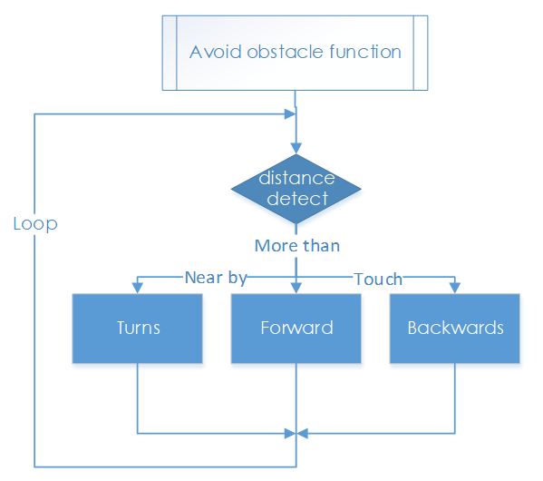

障害物回避¶
動作原理¶
超音波障害物回避モジュールは収集したデータを検出して、障害物からの距離を計算できるRaspberry Piに転送する。Piは前輪と後輪の方向と回転を調整するコマンドを送信して、障害物がある場合は障害物から離れてPiCar-Sを制御する。
手順¶
ステップ1 組み立て
①超音波モジュールと超音波コネクタを M1.4*8 本のネジと M1.4 本のナットで接続します。
②次に、超音波サポートに M3*10 本のネジと M3 ナットで接続します。
③最後に、M3*10 本のネジと M3 ナットでアッパープレートに取り付けます。
注意：指でナットをスロットに入れて下に保持する方が簡単です。
ステップ2 配線
以下に示すように、4ピンのアンチリバースケーブルで超音波障害物回避装置をロボットHATSに接続する。
超音波モジュールは5Vまたは3.3Vの電源を持っていることがある。ここでは、3.3V電源を与える。
ステップ3 テスト
適用する前に、まず超音波障害物回避モジュールをテストする。
cd ~/SunFounder_PiCar-S/example/
python3 test_ultrasonic_module.py
距離の測定がそれほど正確でない場合がある。大丈夫よ。この25kHzの超音波モジュールは汎用のものではないが、約30〜40度の水平検出範囲を持っている。したがって、測定された距離はそれほど正確ではないかもしれないが、その狭い範囲は障害物回避に便利である。さらに、Raspberry Piはリアルタイムのオペレーティングシステムではないため、不正確な時間計算は距離測定の精度にも影響する。ただし、この超音波モジュールは障害物を回避することに十分である。
ステップ4 旅に出よう！
これで、上記のテスト後の超音波モジュールの効果の概要が分かるだろう。超音波障害物回避のコードを実行してみよう。
python3 ultra_sonic_avoid.py
今のところ、PiCar-Sが起動した。車を地面に置くだけである。プログラムに従い、障害物を検出すると方向を転換する。障害物が近すぎる場合、後方に移動し、左/右に走行する。また、コードで障害物検出範囲のしきい値と後方に移動するしきい値を変更することもできる。

ultra_sonic_avoid.pyのコードの説明¶
ワークフロー全体
超音波モジュールはデジタル値、つまり高レベルまたは低レベルを返し、返された2つのレベル間の間隔時間を障害物までの距離に変換できる。したがって、ここではタイミングを求めるためにPythonでtimeモジュールを呼び出す。距離を計算する式は、超音波モジュールのドライバーに書き込まれる。メインプログラムは、対応するプログラムを呼び出して距離値を取得するだけである。
障害物回避機能のサブフロー
車が始動すると、障害物を検出して周期的に距離を測定したり、判断を下したり、行動を起こす。ここは三つのケースがある：障害物までの距離がしきい値と等しい場合、車は方向を変える。距離がしきい値を下回る場合、車は方向を変える前に後退する。距離がしきい値を超えると、続けて前進する。
機能説明
ua = Ultra_Sonic.UltraSonic_Avoidance(17)
Ultra_SonicモジュールでUltraSonic_Avoidanceクラスのオブジェクト**ua**を作成する。丸括弧内の数字は、モジュールのSIGが接続されているピン番号を表す初期パラメーターである。BCM命名方法が適用されているため、Raspberry Piの対応するピンは＃17である。
**back_distance**と**turn_distance**の2つの定数は測距距離のしきい値を設定するためのものである。
while() loop
検出された距離が**back_distance**より小さい場合、車は後方に移動する。距離は**back_distance**と**turn_distance**の間にある場合、車は方向を変える（前述のパラメータ**turning_angle**で回転角度を設定でき、角度は正または負の数で、それぞれ左または右に曲がることができる。サーボの最大回転角度を考慮すると、回転角度は**-90〜90度**であることを**注意**してください。そうしないと、サーボが焼ける恐れがある。）検出された距離が**turn_distance**より大きい場合、車は続けて前進する。
bw.backward()、後輪を後方に回転させる。** bw.forward()**、後輪を前方に回転させる。後輪駆動モジュールback_wheelsのこれら2つの機能は車輪の回転方向を設定するために使用される。
**bw.set_speed(speed) **、back_wheelsの関数で、ホイールの回転速度を設定する。数値が大きければ大きいほど（0〜100の範囲内）、ホイールの回転が速くなる。
**fw.turn(angle) **、back_wheelsの関数で、回転角度を設定する。車が直進するときの角度は90度で、左折するには数値を減らし、右折するには数値を増やす。
fw.turn_straight()、前輪を直進する角度に戻す。
詳細：
back_distance**と**turn_distance
定数を変更して、車をオフに戻し、障害物回避中に希望の距離と角度で離れるようにしてください。